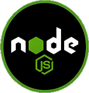
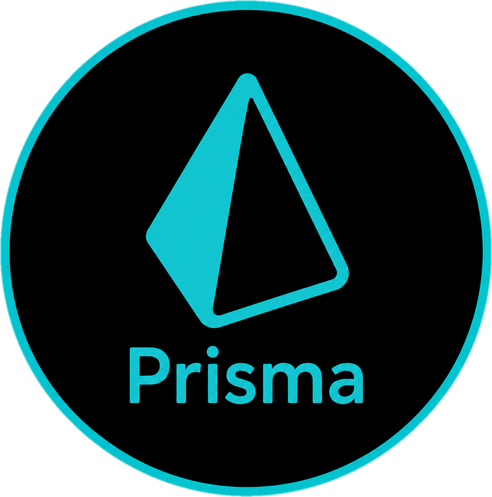

PalletIQ
Active Development Floor app v1.9.0 · API v1.2.6 · Manager desktop app scaffolded
A full-stack warehouse inventory and pallet-tracking system built from 20 years of warehouse floor and retail management experience. It tracks inventory by location rather than by item, with a four-tier role hierarchy, field-level permission gating, and a tablet UI designed for hands-free scanning: numeric-first input, no blocking pop-ups, and every pallet and location ID a tappable link. Organized as a monorepo with a shared TypeScript types package, an Express + Prisma API on MySQL, the React floor app, and a manager-facing Electron desktop app in progress.
Highlights
- Pull and Put (directed and manual) driven by label scans with independent verification paths
- Pallet ID and Location ID detail screens, reachable from any reference in the app
- Empty Locations aisle summary and visual zone-by-zone staging map
- v1.9.0 milestone: Individual Rate of Productivity (IRP), Pull Request Query, and Container ID Inquiry with a per-record audit trail
- Badge + PIN login issuing signed JWTs, reservation locking, and Playwright end-to-end tests